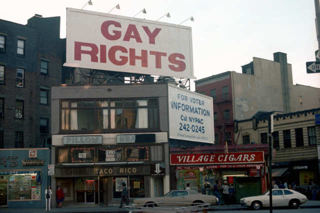

Is it love or hate?
Is it love or hate?

Zabar’s in 1984
Blogs I reblogged the most:
Only 24% of my posts had no tags
Longest Tag: 28 characters
Making out, waiting for the train at 86th Street, 1977
2,549 notes - Posted May 17, 2022
That was a pretty rad bike in 1968!
3,580 notes - Posted July 19, 2022

Times Square, 1970
4,877 notes - Posted January 8, 2022

Cowboy in a phone booth.
6,203 notes - Posted January 10, 2022
1970. How is this still relevant? Fuck you, Supreme Court reactionary dickheads.
On the way to NYU, 1973

Ho ho not.

Is he faking it?

Salt-N-Pepa, Bayside Queens, NYC, February 6, 1988,
Santa seeking an alternative mode of transportation
Snowing in Times Square, 1978
36 seconds of people in midtown, 1973

Bombed garbage truck, 1st Ave and 124th St, 1988
Outside Yankee Stadium, 1988

R Train, circa 1980. Times were tough, and they couldn’t afford real signs.
Diane on the pay phone. 1980’s. City Island. The Bronx, New York. Photo by Ron Terner

Ah, Hot Olympics… Fun for the whole family!
11th and B, 1980s
St Marks Cinema in the 80s

Ezra Stoller, United Nations Building, New York City, 1950.
85th Street on the Upper West Side, 1968

Village Purple Onion, 1960s
1 Police Plaza, downtown

Leo Goldstein Girls On a Fence, Harlem, New York c.1955

Fur boots on Broadway, 1979
Avignone Pharmacy on 6th and Bleecker, 1979

Tar Beach in Alphabet City, 1982
Dreaming of summer…

Newport really wants you to smoke. 8th Ave and 34th St, 1982.
Life under the El, 1957
Snowy, salty car in the 1970s. 23rd and 7th.

Skyline 1976
Billy Crystal outside The Other End, 1976

Gettin’ up in the yards
School trip to the Empire State Building, 1970s
News van outside Howard Johnson’s, beaming its feed to a half-naked guy in the window, 1983

Broadway Sam’s overstuffed bagel sandwiches, 1983. A row of video games in the back.

WTC 1986

Waiting for the bus, 1981

Band playing on White Street, 1979. The audience is unimpressed.

34th Street, near the Empire State Building, 1978
Man, I haven’t thought about Twin Donut for a long time! This one was on White Plains and Gun Hill Roads in the Bronx, 1973.
 New York City
Summer 1978Greenwich Village
Photograph by Nick DeWolf
https://www.flickr.com/photos/dboo/50587667147#photography #film #35mm #newyork #newyorkcity #nyc #greenwichvillage #manhattan #gayrights #streetphotography #1970s

Fab 5 Freddy under the Brooklyn Bridge, 1981

The Russian Tea Room, all dolled up for Christmas, 1988

Graffiti in 1973

Bleecker and Barrow Streets, 1970s.

1970s Times Square fashion